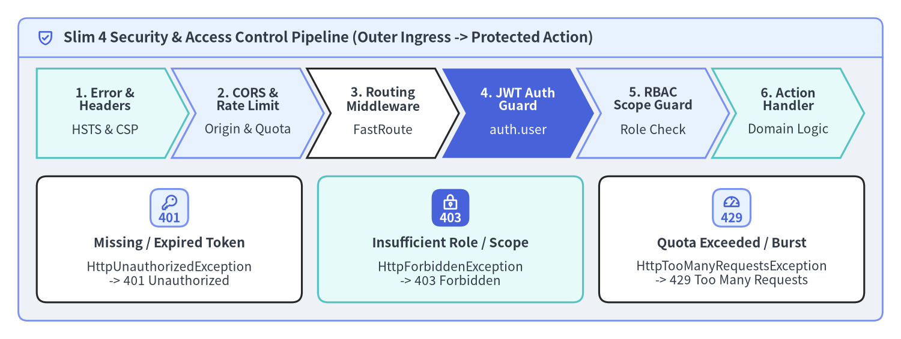
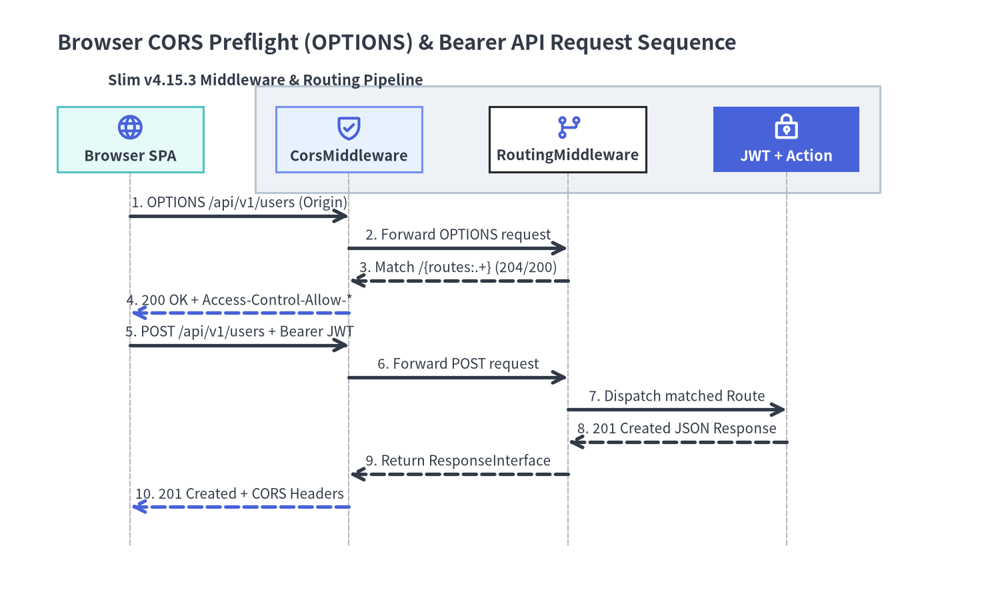

JWT Authentication, RBAC Guards & CORS
Because Slim (v4.15.3) is built strictly around PSR-7 immutable messages and PSR-15 MiddlewareInterface pipelines, it intentionally avoids bundling a monolithic session or identity engine. Instead, authentication, role-based access control (RBAC), Cross-Origin Resource Sharing (CORS), and rate limiting are composed as clean, testable PSR-15 middleware layers that enrich ServerRequestInterface attributes or short-circuit requests by throwing typed HttpSpecializedException subclasses.

Source Code
from drawlib.canvas import save, setup
from drawlib.icons import phosphor
from drawlib.shapes import rectangle
from drawlib.smartarts import CardList, ChevronProcess, Panel
from drawlib.styles import Styles
from drawlib.text import text
setup(width=196, height=74, dpi=150)
outer = Panel(
"Slim 4 Security & Access Control Pipeline (Outer Ingress -> Protected Action)",
style=Styles.Neutral.patch(shape_r=2.0),
header_style=Styles.PrimaryNeutral.patch(shape_line_width=1.2),
text_style=Styles.DarkBold.patch(text_size=11.5),
icon=phosphor.shield_check,
icon_style=Styles.PrimaryBold,
header_variant="filled",
header_height=8.5,
)
outer.draw((4.0, 4.0), width=188.0, height=66.0)
proc = ChevronProcess(
style=Styles.White,
text_style=Styles.DarkBold.patch(text_size=10.2),
description_style=Styles.Dark.patch(text_size=10.0),
corner_angle=62.0,
spacing=1.5,
flat_left_end=True,
)
proc.add(
"1. Error &\nHeaders",
description="HSTS & CSP",
style=Styles.SecondaryNeutral,
)
proc.add(
"2. CORS &\nRate Limit",
description="Origin & Quota",
style=Styles.PrimaryNeutral,
)
proc.add(
"3. Routing\nMiddleware",
description="FastRoute",
style=Styles.White,
)
proc.add(
"4. JWT Auth\nGuard",
description="auth.user",
style=Styles.PrimaryFlat,
text_style=Styles.WhiteBold.patch(text_size=10.2),
description_style=Styles.White.patch(text_size=10.0),
)
proc.add(
"5. RBAC\nScope Guard",
description="Role Check",
style=Styles.PrimaryNeutral,
)
proc.add(
"6. Action\nHandler",
description="Domain Logic",
style=Styles.SecondaryNeutral,
)
proc.draw(xy=(8.0, 39.5), width=180.0, height=19.5)
cards = CardList(
style=Styles.White,
text_style=Styles.DarkBold.patch(text_size=10.5),
description_style=Styles.Dark.patch(text_size=10.0),
badge_shape="rounded_rect",
badge_style=Styles.PrimaryNeutral,
badge_text_style=Styles.PrimaryBold.patch(text_size=10.0),
icon_style=Styles.PrimaryBold,
direction="horizontal",
spacing=3.5,
)
cards.add(
"Missing / Expired Token",
"HttpUnauthorizedException\n-> 401 Unauthorized",
badge_text="401",
icon=phosphor.key,
)
cards.add(
"Insufficient Role / Scope",
"HttpForbiddenException\n-> 403 Forbidden",
badge_text="403",
icon=phosphor.lock_key,
style=Styles.SecondaryNeutral,
badge_style=Styles.PrimaryFlat,
badge_text_style=Styles.WhiteBold.patch(text_size=10.0),
icon_style=Styles.WhiteBold,
)
cards.add(
"Quota Exceeded / Burst",
"HttpTooManyRequestsException\n-> 429 Too Many Requests",
badge_text="429",
icon=phosphor.gauge,
)
cards.draw(xy=(8.0, 8.0), width=180.0, height=27.5)
save()
Defense-in-Depth Security Architecture in Slim 4
In a production Slim 4 API, security checks are separated by responsibility and attached at the appropriate layer of the PSR-15 Concentric LIFO Pipeline. Global concerns (error boundary, security headers, CORS headers, and IP rate limiting) wrap the entire application, whereas JWT verification and RBAC authorization are scoped to protected RouteGroup or Route instances:
| Security Layer | Scope & Attachment Point | Request / Response Mutation | Failure Behavior |
|---|---|---|---|
| Error & Security Headers | App-wide ($app->add(...), outermost) |
Appends Strict-Transport-Security, X-Content-Type-Options, Content-Security-Policy |
Catches any Throwable and renders a safe payload |
| CORS Preflight & Headers | App-wide ($app->add(CorsMiddleware::class)) |
Appends Access-Control-Allow-* headers to normal and OPTIONS responses |
Rejects disallowed origins or omits CORS headers |
| Rate Limiting Guard | App-wide or API RouteGroup |
Tracks token bucket per IP/API key; sets X-RateLimit-* and Retry-After headers |
Throws HttpTooManyRequestsException (429) |
| JWT / Bearer Auth | Protected RouteGroup (/api/v1) |
Verifies JWT signature & expiry; sets $request->withAttribute('auth.user', $claims) |
Throws HttpUnauthorizedException (401) |
| RBAC / Scope Guard | Specific RouteGroup or Route |
Reads $request->getAttribute('auth.user') and verifies required role/scope |
Throws HttpForbiddenException (403) |
Stateless Bearer & JWT Authentication Middleware
A stateless JWT authentication middleware implements Psr\Http\Server\MiddlewareInterface. It inspects the Authorization header for a Bearer <token> credential, validates the cryptographic signature and standard claims (exp, iss, aud, sub), and passes the decoded identity downstream via $request->withAttribute('auth.user', $principal). If the header is missing, malformed, or expired, throwing Slim\Exception\HttpUnauthorizedException immediately halts downstream execution and delegates rendering to ErrorMiddleware:
<?php
declare(strict_types=1);
namespace App\Http\Middleware;
use App\Security\AuthenticatedUser;
use App\Security\JwtTokenVerifierInterface;
use Psr\Http\Message\ResponseInterface;
use Psr\Http\Message\ServerRequestInterface;
use Psr\Http\Server\MiddlewareInterface;
use Psr\Http\Server\RequestHandlerInterface;
use Slim\Exception\HttpUnauthorizedException;
use Throwable;
final class JwtAuthenticationMiddleware implements MiddlewareInterface
{
public const AUTH_USER_ATTRIBUTE = 'auth.user';
public function __construct(
private readonly JwtTokenVerifierInterface $tokenVerifier,
) {
}
public function process(
ServerRequestInterface $request,
RequestHandlerInterface $handler
): ResponseInterface {
// Allow CORS preflight requests to pass through without a Bearer token
if (strtoupper($request->getMethod()) === 'OPTIONS') {
return $handler->handle($request);
}
$authHeader = $request->getHeaderLine('Authorization');
if (!preg_match('/^Bearer\s+(?<token>[A-Za-z0-9\-_]+\.[A-Za-z0-9\-_]+\.[A-Za-z0-9\-_]+)$/', $authHeader, $matches)) {
$exception = new HttpUnauthorizedException(
$request,
'Missing or malformed Authorization: Bearer <token> header.'
);
$exception->setDescription('Provide a valid Bearer JWT in the Authorization header.');
throw $exception;
}
try {
$claims = $this->tokenVerifier->verify($matches['token']);
} catch (Throwable $e) {
throw new HttpUnauthorizedException(
$request,
'Invalid or expired JWT access token.',
$e
);
}
$principal = new AuthenticatedUser(
userId: (string) $claims['sub'],
roles: (array) ($claims['roles'] ?? []),
scopes: explode(' ', (string) ($claims['scope'] ?? '')),
);
// Attach immutable principal to the PSR-7 request for downstream guards & controllers
return $handler->handle(
$request->withAttribute(self::AUTH_USER_ATTRIBUTE, $principal)
);
}
}
Because ServerRequestInterface::withAttribute() returns a new immutable request clone, downstream controllers never need to re-parse the Authorization header or access global state—they simply retrieve $request->getAttribute(JwtAuthenticationMiddleware::AUTH_USER_ATTRIBUTE).
Role-Based Access Control (RBAC) & Scope Guards
Authentication (401 Unauthorized) establishes who the caller is; authorization (403 Forbidden) determines whether that authenticated principal is allowed to perform a specific action. By separating RBAC into a parameterized middleware class, you can compose fine-grained guards onto any RouteGroup or individual Route:
<?php
declare(strict_types=1);
namespace App\Http\Middleware;
use App\Security\AuthenticatedUser;
use Psr\Http\Message\ResponseInterface;
use Psr\Http\Message\ServerRequestInterface;
use Psr\Http\Server\MiddlewareInterface;
use Psr\Http\Server\RequestHandlerInterface;
use Slim\Exception\HttpForbiddenException;
use Slim\Exception\HttpUnauthorizedException;
use Slim\Routing\RouteCollectorProxy;
final class RequireRoleMiddleware implements MiddlewareInterface
{
/**
* @param list<string> $allowedRoles
*/
public function __construct(
private readonly array $allowedRoles,
private readonly ?string $requiredScope = null,
) {
}
public function process(
ServerRequestInterface $request,
RequestHandlerInterface $handler
): ResponseInterface {
$user = $request->getAttribute(JwtAuthenticationMiddleware::AUTH_USER_ATTRIBUTE);
if (!$user instanceof AuthenticatedUser) {
throw new HttpUnauthorizedException($request, 'Authentication required before role evaluation.');
}
$hasRole = count(array_intersect($this->allowedRoles, $user->roles)) > 0;
$hasScope = $this->requiredScope === null || in_array($this->requiredScope, $user->scopes, true);
if (!$hasRole || !$hasScope) {
$exception = new HttpForbiddenException(
$request,
sprintf('Requires one of roles [%s].', implode(', ', $this->allowedRoles))
);
$exception->setDescription('Your account does not have sufficient privileges for this resource.');
throw $exception;
}
return $handler->handle($request);
}
}
// Attaching JWT Auth to the /api/v1 group and RBAC guards to nested admin routes:
$app->group('/api/v1', function (RouteCollectorProxy $v1): void {
$v1->get('/profile', \App\Action\Profile\GetProfileAction::class);
$v1->group('/admin', function (RouteCollectorProxy $admin): void {
$admin->post('/users', \App\Action\Admin\CreateUserAction::class)
->add(new RequireRoleMiddleware(['admin'], requiredScope: 'users:write'));
$admin->get('/audit-logs', \App\Action\Admin\ListAuditLogsAction::class)
->add(new RequireRoleMiddleware(['admin', 'auditor'], requiredScope: 'audit:read'));
});
})->add(JwtAuthenticationMiddleware::class);
Keep two LIFO ordering rules in mind when stacking JwtAuthenticationMiddleware and RequireRoleMiddleware:
- Group vs. Route Execution Order: Slim's
Route::prepareRouteMiddleware()wraps group middlewares outside route-specific middlewares. AttachingJwtAuthenticationMiddlewareto the/api/v1group andRequireRoleMiddlewareto child routes guarantees thatJwtAuthenticationMiddlewareexecutes first and populatesauth.userbeforeRequireRoleMiddlewareinspects it. - Passing
$requesttoHttpException: Always pass the most recent$requestinstance tonew HttpUnauthorizedException($request)ornew HttpForbiddenException($request)soErrorMiddlewarepreserves all request attributes and headers.
Cross-Origin Resource Sharing (CORS) & Preflight Requests
When a browser-based Single-Page Application (SPA) sends a cross-origin request with an Authorization header or Content-Type: application/json, the browser first issues an OPTIONS preflight request. In Slim 4, a complete CORS implementation requires three coordinated pieces:
- A catch-all
OPTIONSroute ($app->options('/{routes:.+}', ...)) so FastRoute does not throwHttpMethodNotAllowedException(405) on preflight requests. - A
CorsMiddlewareplaced near the outside of the pipeline soAccess-Control-Allow-*headers are attached to both normal responses and error responses. - Slim's built-in
ErrorHandler::determineStatusCode()behavior, which explicitly checksif ($this->method === 'OPTIONS') { return 200; }so even unhandledOPTIONSrequests return HTTP200.

Source Code
from drawlib.canvas import save, setup
from drawlib.diagrams.sequence import Participant, ParticipantGroup, PhosphorIcon, SequenceDiagram
from drawlib.styles import Styles
setup(width=192, height=116, dpi=150)
seq = SequenceDiagram(
node_style=Styles.PrimaryBold,
node_text_style=Styles.DarkBold.patch(text_size=10.5),
edge_style=Styles.DarkBold,
edge_text_style=Styles.Dark.patch(text_size=10.0),
node_card_style=Styles.Neutral,
title="Browser CORS Preflight (OPTIONS) & Bearer API Request Sequence",
autonumber=True,
col_width=42.0,
step_y=6.2,
)
browser = seq.add(
Participant(
"Browser SPA",
width=28.0,
height=12.5,
icon=PhosphorIcon.GLOBE,
icon_size=5.5,
card_style=Styles.SecondaryNeutral,
)
)
slim_group = seq.add(
ParticipantGroup(
title="Slim v4.15.3 Middleware & Routing Pipeline",
padding=4.0,
style=Styles.Neutral,
text_style=Styles.DarkBold.patch(text_size=10.5),
)
)
cors_mw = slim_group.add(
Participant(
"CorsMiddleware",
width=28.0,
height=12.5,
icon=PhosphorIcon.SHIELD_CHECK,
icon_size=5.5,
card_style=Styles.PrimaryNeutral,
)
)
routing_mw = slim_group.add(
Participant(
"RoutingMiddleware",
width=30.0,
height=12.5,
icon=PhosphorIcon.GIT_BRANCH,
icon_size=5.5,
card_style=Styles.White,
)
)
jwt_action = slim_group.add(
Participant(
"JWT + Action",
width=28.0,
height=12.5,
icon=PhosphorIcon.LOCK_KEY,
icon_size=5.5,
card_style=Styles.PrimaryFlat,
text_style=Styles.WhiteBold.patch(text_size=10.5),
style=Styles.WhiteBold,
)
)
browser.request(cors_mw, "OPTIONS /api/v1/users (Origin)")
cors_mw.request(routing_mw, "Forward OPTIONS request")
routing_mw.reply(cors_mw, "Match /{routes:.+} (204/200)")
cors_mw.reply(browser, "200 OK + Access-Control-Allow-*", style=Styles.PrimaryBold)
browser.request(cors_mw, "POST /api/v1/users + Bearer JWT")
cors_mw.request(routing_mw, "Forward POST request")
routing_mw.request(jwt_action, "Dispatch matched Route")
jwt_action.reply(routing_mw, "201 Created JSON Response")
routing_mw.reply(cors_mw, "Return ResponseInterface")
cors_mw.reply(browser, "201 Created + CORS Headers", style=Styles.PrimaryBold)
seq.draw(xy=(6.0, 4.0))
save()
Below is a production-ready CorsMiddleware paired with a strict origin allowlist and the catch-all OPTIONS route:
<?php
declare(strict_types=1);
namespace App\Http\Middleware;
use Psr\Http\Message\ResponseInterface;
use Psr\Http\Message\ServerRequestInterface;
use Psr\Http\Server\MiddlewareInterface;
use Psr\Http\Server\RequestHandlerInterface;
use Slim\Routing\RouteContext;
final class CorsMiddleware implements MiddlewareInterface
{
/**
* @param list<string> $allowedOrigins
*/
public function __construct(
private readonly array $allowedOrigins = ['https://app.example.com'],
) {
}
public function process(
ServerRequestInterface $request,
RequestHandlerInterface $handler
): ResponseInterface {
$routeContext = RouteContext::fromRequest($request);
$routingResults = $routeContext->getRoutingResults();
$methods = $routingResults->getAllowedMethods();
$requestHeaders = $request->getHeaderLine('Access-Control-Request-Headers');
$response = $handler->handle($request);
$origin = $request->getHeaderLine('Origin');
if ($origin !== '' && in_array($origin, $this->allowedOrigins, true)) {
$response = $response
->withHeader('Access-Control-Allow-Origin', $origin)
->withHeader('Access-Control-Allow-Credentials', 'true')
->withHeader('Vary', 'Origin');
}
$allowedMethods = count($methods) > 0
? implode(', ', array_unique(array_merge($methods, ['OPTIONS'])))
: 'GET, POST, PUT, PATCH, DELETE, OPTIONS';
return $response
->withHeader('Access-Control-Allow-Methods', $allowedMethods)
->withHeader(
'Access-Control-Allow-Headers',
$requestHeaders !== '' ? $requestHeaders : 'Content-Type, Authorization, X-Requested-With'
)
->withHeader('Access-Control-Max-Age', '86400');
}
}
// In bootstrap/routes.php — Catch-all OPTIONS route for preflight requests:
$app->options('/{routes:.+}', function (
ServerRequestInterface $request,
ResponseInterface $response
): ResponseInterface {
return $response;
});
// In bootstrap/middleware.php — Place RoutingMiddleware outside CorsMiddleware so getAllowedMethods() is populated,
// OR place a fallback CORS header decorator outside ErrorMiddleware for 401/403/500 responses:
$app->add(CorsMiddleware::class);
$app->addRoutingMiddleware();
$app->addErrorMiddleware(displayErrorDetails: false, logErrors: true, logErrorDetails: true);
Rate Limiting & Hardened HTTP Security Headers
To protect public and authenticated endpoints against credential stuffing, brute-force token guessing, and XSS/MIME-sniffing attacks, combine a Redis/APCu token-bucket rate limiter (throwing Slim\Exception\HttpTooManyRequestsException on quota exhaustion) with standard security headers:
| Header Name | Recommended Production Value | Protection Provided |
|---|---|---|
Strict-Transport-Security |
max-age=63072000; includeSubDomains; preload |
Enforces HTTPS-only connections (HSTS) |
X-Content-Type-Options |
nosniff |
Prevents browsers from MIME-sniffing JSON responses as HTML |
X-Frame-Options |
DENY |
Blocks clickjacking via <frame> or <iframe> embedding |
Content-Security-Policy |
default-src 'none'; frame-ancestors 'none' |
Locks down pure JSON API responses against script execution |
Referrer-Policy |
no-referrer |
Prevents leaking sensitive URL tokens in Referer headers |
<?php
declare(strict_types=1);
namespace App\Http\Middleware;
use App\Security\RateLimiterInterface;
use Psr\Http\Message\ResponseInterface;
use Psr\Http\Message\ServerRequestInterface;
use Psr\Http\Server\MiddlewareInterface;
use Psr\Http\Server\RequestHandlerInterface;
use Slim\Exception\HttpTooManyRequestsException;
final class RateLimitAndSecurityHeadersMiddleware implements MiddlewareInterface
{
public function __construct(
private readonly RateLimiterInterface $rateLimiter,
) {
}
public function process(
ServerRequestInterface $request,
RequestHandlerInterface $handler
): ResponseInterface {
$clientKey = $request->getServerParams()['REMOTE_ADDR'] ?? 'unknown';
$quota = $this->rateLimiter->consume($clientKey, limit: 120, windowSeconds: 60);
if (!$quota->isAllowed) {
$exception = new HttpTooManyRequestsException(
$request,
sprintf('Rate limit exceeded. Retry after %d seconds.', $quota->retryAfterSeconds)
);
throw $exception;
}
$response = $handler->handle($request);
return $response
->withHeader('X-RateLimit-Limit', (string) $quota->limit)
->withHeader('X-RateLimit-Remaining', (string) $quota->remaining)
->withHeader('Strict-Transport-Security', 'max-age=63072000; includeSubDomains; preload')
->withHeader('X-Content-Type-Options', 'nosniff')
->withHeader('X-Frame-Options', 'DENY')
->withHeader('Content-Security-Policy', "default-src 'none'; frame-ancestors 'none'")
->withHeader('Referrer-Policy', 'no-referrer');
}
}
Next, see ErrorMiddleware & Custom Renderers to learn how ErrorMiddleware and ErrorHandler turn HttpUnauthorizedException (401), HttpForbiddenException (403), and HttpTooManyRequestsException (429) into structured JSON or RFC 9457 Problem Details payloads, or explore In-Memory HTTP Testing with PHPUnit and the Slim 4 API Reference to verify security middlewares in automated tests.